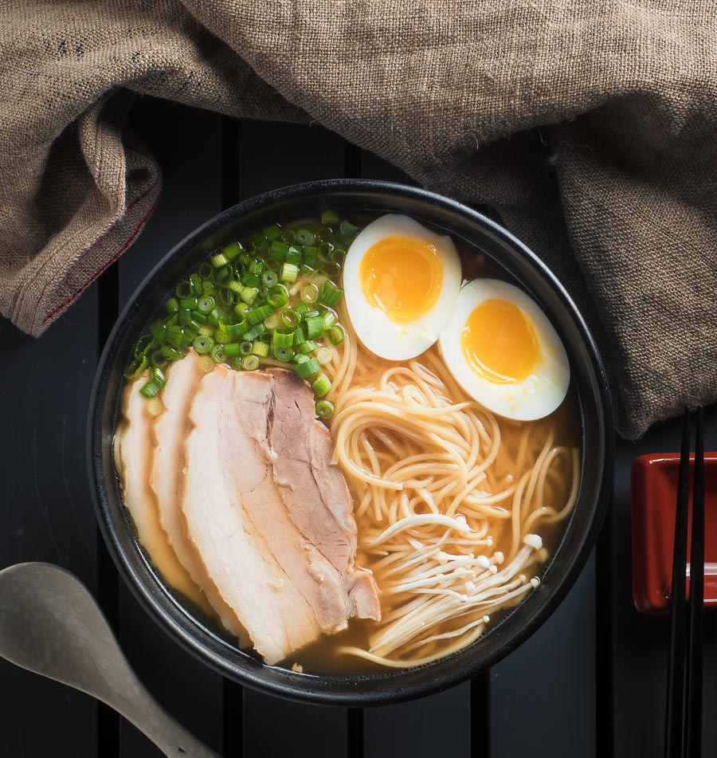

Back to Andrew's Recipes
Miso Ramen

About Miso Ramen
Miso ramen is a Japanese noodle soup that features a rich and savory miso-based broth, combined with various toppings and ingredients. This dish is known for its deep, umami flavors and comforting texture, making it a beloved choice among ramen enthusiasts.
Ingredients
- Ramen noodles
- Miso paste
- Chicken or pork broth
- Soft-boiled eggs
- Green onions
- Bean sprouts
- Nori (seaweed)
- Chashu pork
Instructions
- Prepare the miso broth by combining miso paste with chicken or pork broth and heating it until well mixed.
- Cook the ramen noodles according to the package instructions and set aside.
- Soft-boil the eggs and slice them in half.
- Assemble the ramen bowls by placing the cooked noodles in the bowl, pouring the miso broth over them, and adding the soft-boiled eggs, green onions, bean sprouts, nori, and chashu pork on top.
- Serve the Miso ramen hot and enjoy!